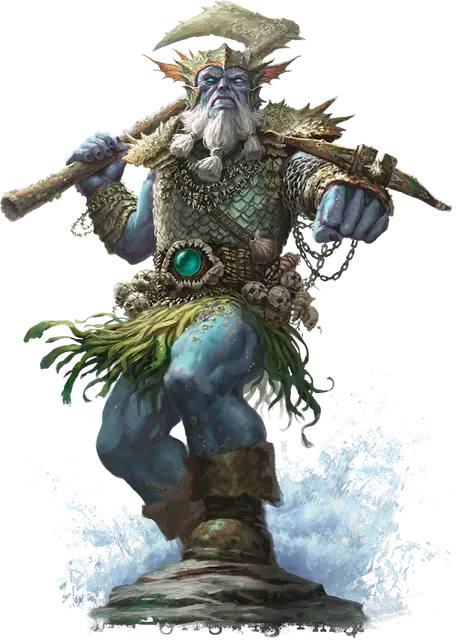

Ледяной великан Злой воды
Frost Giant of Evil Water
Огромный Великан, обычно нейтрально-злой

Класс Доспеха 16 (чешуйчатый доспех)
Хиты 172 (15к12 + 75)
Скорость 40 футов, плавая 40 футов
| мод | спас | ||
|---|---|---|---|
| СИЛ | 23 | +6 | +6 |
| ЛОВ | 16 | +3 | +7 |
| ТЕЛ | 21 | +5 | +9 |
| мод | спас | ||
|---|---|---|---|
| ИНТ | 9 | −1 | −1 |
| МДР | 14 | +2 | +6 |
| ХАР | 12 | +1 | +1 |
Навыки Атлетика +10, Восприятие +6
Иммунитет к урону холод
Чувства пассивное Восприятие 16
Языки Общий, Акван, Великаний
Опасность 11 (7200 опыта)
Бонус мастерства +4
Особенности
Амфибия. Великан может дышать и воздухом и под водой.
Действия
Мультиатака. Великан совершает две атаки Боевым топором и одну атаку Гарпуном.
Боевой топор. . Рукопашная атака оружием: +10 к попаданию, досягаемость 10 футов, одна цель. Попадание: 19 (3к8 + 6) рубящего урона или 22 (3к10 + 6) рубящего урона при использовании двумя руками, плюс 7 (2к6) урона холодом.
Гарпун. . Дальнобойная атака оружием: +7 к попаданию, дистанция 50/200 футов, одно существо. Попадание: 14 (2к10 + 3) колющего урона, и цель становится схваченной (Сл высвобождения 16). Пока цель схвачена таким образом, её скорость не уменьшается, но она не может отойти от великана. Цель получает 5 (1к10) рубящего урона, если она вырывается из захвата или если она пытается и у неё не получается. Великан может держать в захвате своим гарпуном только одну цель за раз.
Бонусные действия
Притягивание. Великан подтягивает цель, захваченную его гарпуном, на 20 футов к себе.
Описание
Я достаточно узнал о Храмах Элементального зла во время моих занятий с Морденкайненом, чтобы относиться к великанам, связанным с культом, со здоровой долей уважения. Когда вы сочетаете фанатичную преданность культиста с явной мощью великана, результат может быть ужасающим.
- Бигби
Хотя изначальный мороз и лёд действительно существуют (в первую очередь Крионакс, которого иногда считают почти равным четырем принцам Элементального Зла), ледяные великаны, которые отвернулись от богов Уложения и приняли Элементальное Зло, с большей вероятностью будут служить Ольгидре, принцессе Злой Воды. Для этих великанов вода - жестокая и разрушительная сила, которая находит свое окончательное выражение во льду. Эти культисты Злой Воды часто скрывают свою преданность как можно дольше, подталкивая свои сообщества ко все возрастающей жестокости и насилию, но если отступничество культистов раскрывается и их изгоняют, они часто становятся лидерами культов Ольгидры в более холодных регионах.
Ольгидра дарует этим ледяным великанам способность дышать под водой, а также доспехи и оружие, отражающие их приверженность культу. Их доспехи снабжены огромными арбалетами, которые могут запускать зазубренные гарпуны, которые великаны используют, чтобы затаскивать врагов в воду или протаскивать через нее.